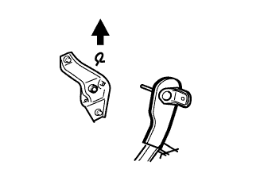

スライドドアハーフオープン ストッパASSY 取り外し |
| 1. バックドア ウエザストリップ取りはずし |
| 2. リヤフロア カーペット取りはずし |
| 3. スペアホイール カバーASSY取りはずし |
| 4. バックドアスカッフ プレート取りはずし |
 |
クリップ2個を取りはずす。
トリムカバー端部より手で上方に引き、クリップのかん合をはずしてバツクドアスカツフプレートを取りはずす。
| 5. リヤシートバツクASSY取りはずし（リヤシート一体可倒式） |
リヤシートバツクを前倒位置にする。
 |
ボルト2本取り付け部のクリップをはずす。
 |
リヤシートバツクカバーをめくりボルト2本をはずし、リヤシートバツクASSYを取りはずす。
| 6. リヤシートクッションASSY取りはずし（リヤシート一体可倒式） |
前部のロックのレバーを図の矢印の方向に押してかん合をはずす。
リヤシートベルトを、リヤシートクッションカバー & パッド後部のゴムバンドに通す。
 |
リヤシートクッションASSY後部のフックのかん合をはずし、リヤシートクッションASSYを取りはずす。
| 7. リヤシートバック ヒンジSUB-ASSY RH取りはずし（リヤシート一体可倒式） |
 |
ボルトをはずし、リヤシート バツク ヒンジ RHを取りはずす。
| 8. リヤシートバック ヒンジSUB-ASSY LH取りはずし（リヤシート一体可倒式） |
ボルトをはずし、リヤシート バツク ヒンジ LHを取りはずす。
| 9. リヤシートバツクASSY RH取りはずし（リヤシート分割可倒式） |
| 10. リヤシートバツクASSY LH取りはずし（リヤシート分割可倒式） |
リヤシートバツクを前倒位置にする。
 |
ボルト2本取り付け部のクリップをはずす。
|
リヤシートバツクカバー下部をめくりボルト2本をはずし、リヤシートバツクを取りはずす。
| 11. リヤシートクッションASSY取りはずし（リヤシート分割可倒式） |
リヤシートクッションASSY前側をリヤシート クッション ロック ストライカにロックさせる。
|  |
リヤシートバックヒンジRHよりスナップリングを取りはずす。
リヤシートクッションASSY右側ブラケットの、リヤシートヒンジRHを引き抜いて取りはずす。
 |
ボルトをはずし、リヤシ－トヒンジLHを取りはずす。
リヤシートクッションASSYのリヤシート フックASSY RHを引き、リヤシートクッションASSY前部のかん合をはずす。
リヤシートベルトを、リヤシートクッションカバー & パッド後部のゴムバンドに通す。
リヤシートクッションASSYを取りはずす。
| 12. フロントドアスカッフ プレート LH取りはずし |
 |
手で上方に引いて車両後方からツメのかん合をはずし、フロントドアスカツフプレートLHを取りはずす。
| 13. デッキサイドトリム カバー FR LH取りはずし |
 |
手で車両前方に引いてツメのかん合をはずし、デツキサイドトリムカバーFR LHを取りはずす。
| 14. リヤドア オープニングトリム ウェザストリップ LH取りはずし |
リヤドアオープニングトリムウェザストリップをデッキサイドトリムカバーFR LHおよびデッキトリムサイドパネルASSYにかかる部分のみ取りはずす。
| 15. リヤシートベルトASSY OUT LH取りはずし（フロアアンカ部） |
ボルトをはずし、リヤシート 3ポイントタイプ ベルトASSY OUT LH（フロアアンカ部）を取りはずす。
| 16. デッキトリムサイド パネルASSY LH取りはずし |
 |
サイドボードを手で車両内側方向に引き、クリップおよびツメのかん合をはずし、デツキトリムサイドパネルASSY LＨを取りはずす。
| 17. スライドドアハーフオープンストッパ コントロールASSY取りはずし |
 |
フューエルリッドを開ける。
車両外側からナットを取りはずす。
ツメのかん合をはずし、スライドドアハーフオープンストッパコントロールASSYを室内側からとりはずす。
コネクタを切り離す。
ケーブルを切り離す。
| 18. スライドドアハーフオープン ストッパASSY取りはずし |
 |
ナット2個を取りはずしスライドドア ハーフォープンストッパを取りはずす。
クランプ3箇所からケーブルを切り離す。
クランプ2箇所を取りはずし、スライドドハーフオープンストッパケーブルを取りはずす。